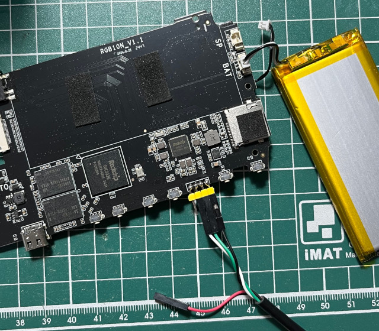

腳位

DDR V1.14 20190925 D3,1024MB,333MHz bw col bk row cs dbw 32 10 8 15 1 16 OUT Boot1 Release Time: Nov 8 2019 19:34:47, version: 1.21 support nand flash type: slc chip_id:524b3326_0,0 ChipType = 0x12, 566 sfc nor id: 85 20 18 mmc0:cmd5,20 SdmmcInit=0 0 BootCapSize=0 UserCapSize=15193MB FwPartOffset=2000 , 0 StorageInit ok = 140540 SecureMode = 0 Secure read PBA: 0x4 Secure read PBA: 0x404 Secure read PBA: 0x804 Secure read PBA: 0xc04 Secure read PBA: 0x1004 SecureInit ret = 0, SecureMode = 0 atags_set_bootdev: ret:(0) GPT 0x330c1e0 signature is wrong recovery gpt... GPT 0x330c1e0 signature is wrong recovery gpt fail! LoadTrust Addr:0x4000 No find bl30.bin Load uboot, ReadLba = 2000 Load OK, addr=0x200000, size=0xfc838 RunBL31 0x10000 @ 293971 us NOTICE: BL31: v1.3(debug):1b8f3f9 NOTICE: BL31: Built : 15:17:34, Jul 6 2018 NOTICE: BL31:Rockchip release version: v1.0 INFO: ARM GICv2 driver initialized INFO: Using opteed sec cpu_context! INFO: boot cpu mask: 1 INFO: plat_rockchip_pmu_init: pd status f00e INFO: BL31: Initializing runtime services INFO: BL31: Initializing BL32 I/TC: console use rk_atags param! console_data.base.pa=0xff160000 I/TC: I/TC: Start rockchip platform init I/TC: Rockchip release version: 1.1 I/TC: OP-TEE version: 3.3.0-146-g369430b2 #12 Wed Dec 5 07:40:03 UTC 2018 aarch64 I/TC: Initialized INFO: BL31: Preparing for EL3 exit to normal world INFO: Entry point address = 0x200000 INFO: SPSR = 0x3c9